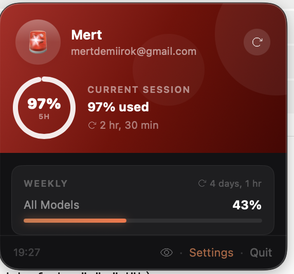

A tiny macOS menu bar companion that watches your Claude.ai usage all day — so you never get cut off mid-thought.

Every Claude model
Session and weekly usage broken down per model — nothing hidden.
Features
Everything you need, nothing you don't.
Your live usage percentage, always one glance away — with a little buddy who turns red as you get close.
A built-in chart shows how you spent your session over the last day, week, or month. Spot your patterns.
Get a gentle macOS notification when your 5-hour session crosses 80% and 95%. No surprises mid-task.
Your session key lives in the macOS Keychain and your history stays on your Mac. No accounts, no telemetry, no cloud.
Completely free, forever. The full source is on GitHub — read it, fork it, or send a pull request.
Featherweight on your Mac, auto-refreshes on your schedule, and speaks English, Turkish, French, German & Italian.
Get started
Two ways to install — pick whichever you like.
Paste this into Terminal:
Grab the latest .zip, unzip, and drag to Applications.
First launch blocked by macOS? Run xattr -cr /Applications/ClaudeUsageWidget.app once, then open normally.